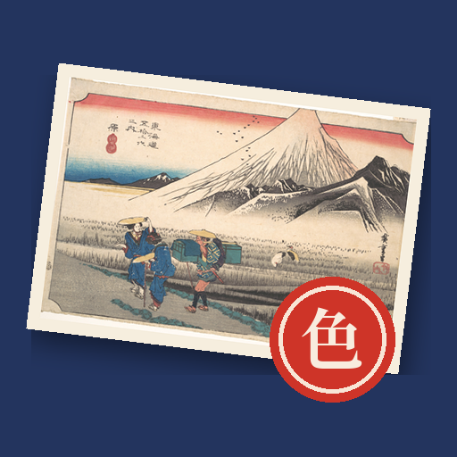

<- all projects

Palette Postcards
PC
Volume
Live
Bring the old road back to colour
Your grandfather left you a tin of postcards, each showing a station of the old Tokaido road from Edo to Kyoto, and each faded to grey. His note asks you to walk the road for him. The pictures are real woodblock prints by Utagawa Hiroshige. Pick an ink and sweep the brush to bring every block of that ink back to life, using fewer strokes for more stars. Then write a line, press your seal and post the card. Replies arrive the next morning with more of his story. 35 stations, 35 letters, 15 views of old Edo and 16 seals to collect.